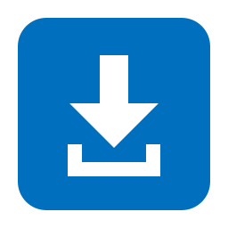
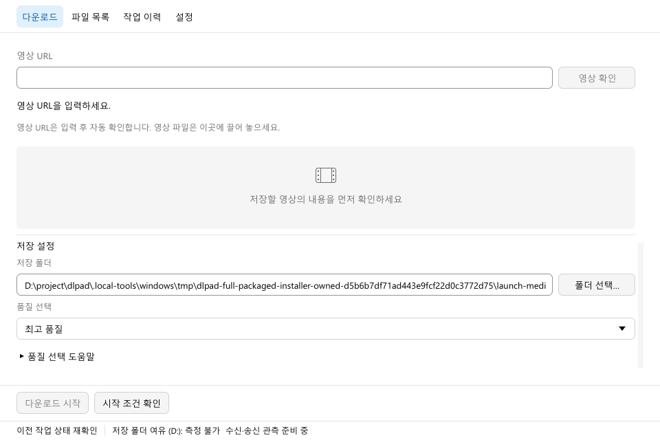

설치형
일반적인 사용에 추천ZIP을 풀고 설치 프로그램을 실행하세요.
현재 사용자 앱 목록·시작 메뉴에 등록합니다.

dlpadWindows에서 만나는 yt-dlp
영상 주소 하나로 시작하세요.
미리 보고, 필요한 구간을 고르고,
저장한 파일까지 한곳에서.
Rust 네이티브 · 오픈 소스 · Windows 64비트

yt-dlp의 다운로드 기능과 FFmpeg의 미디어 처리를
차분하고 익숙한 데스크톱 화면에 담았습니다.
복잡한 명령어는 앱에 맡기고,
무엇을 저장할지에 집중하세요.
YouTube나 치지직 VOD 주소로 시작합니다. 영상 정보를 확인하고 품질과 저장 위치를 선택하세요.
미리보기를 보며 구간을 선택하거나 시간을 직접 입력하세요. 전체 영상 저장도 가능합니다.
진행률과 속도를 확인하고, 저장한 파일을 검색하고 여세요. 원본을 유지하며 다른 이름으로 복사할 수 있습니다.
사이트와 원본 영상, 설치된 외부 도구에 따라 사용 가능한 기능과 이어받기 지원이 달라집니다.
내 PC에서 시작하기
설치형과 포터블, 같은 dlpad입니다.
현재 Windows 64비트를 우선 지원합니다.
공개 릴리스 정보를 확인하고 있습니다.
GitHub에서 모든 릴리스 보기yt-dlp, FFmpeg, Deno 같은 외부 도구는 앱의 설정 → 도구에서 설치하고 버전을 관리할 수 있습니다. 이미 설치한 도구도 선택할 수 있습니다. 각 도구의 배포와 라이선스 조건은 서로 다릅니다.
v0.1.2부터 설정 → 앱 업데이트에서 조회 채널을 미리보기 버전으로 선택해 새 버전을 확인하고, 내려받은 뒤 재시작할 수 있습니다. v0.1.0은 v0.1.4를 한 번 수동 설치하세요. 업데이트 메타데이터는 서명을 검증하지만 Windows 코드 서명은 제공하지 않습니다. 다운로드 도구의 버전 관리는 앱 업데이트와 별개입니다.
v0.1.4 설치형은 현재 사용자용으로 등록하며 포터블은 자동 등록하지 않습니다. 기존 v0.1.2는 새 설치기에서 기존 위치를 확인하고 Windows 등록을 누르세요. 앱 업데이트만으로는 등록되지 않습니다. Windows 목록의 버전은 처음 설치한 버전 기준이라 앱 화면의 버전과 다를 수 있습니다.
Windows 설정 → 앱 → 설치된 앱 또는 제어판의 프로그램 제거에서 dlpad를 선택하세요. 영상·설정·다운로드 도구는 보존합니다. 설치가 여러 개면 이름의 짧은 식별자로 구분합니다. 임시 제거 프로그램은 이번 버전에서 자동 정리하지 않습니다.
지금은 Windows를 우선 개발하고 검증합니다. 다른 운영체제는 후속 지원 대상이며, 현재 다운로드로 제공하지 않습니다.
dlpad 계정은 필요하지 않습니다. 영상은 선택한 로컬 폴더에 저장합니다. 원본 사이트에서 인증을 요구하는 영상은 해당 사이트의 접근 조건을 따릅니다.